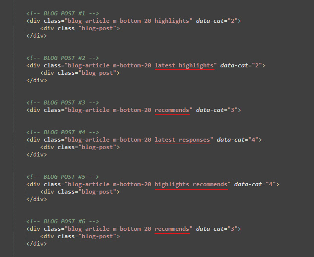

Eventry - Conference & Event Landing Page Template
Documentation
- Created: 30/ 07/ 2016
- by: DSAThemes
- Email: DSAThemes@gmail.com
Welcome! First of all we want to thank you for purchasing our Conference & Event Landing Page Template
We really do appreciate every sale. If you like our work please do not forget to rate it. It helps us in developing new and better items

In the following sections we will explain how to set up and use it the easiest way possible. If you have any questions that you feel should have been in this document you can contact us through our profile page on themeforest.net/user/DSA79 and we'll get back to you as soon as possible. Thanks so much!!!
For questions on basic HTML, JavaScript or CSS editing - please give your question a quick Google or visit W3Schools as template issues get top priority. You will need some knowledge of HTML/CSS to edit this tempate.
Which code editor for editing files?
You can use notepad++ , sublimetext 3 or brackets for editing the code.
Notepad++ download link: https://notepad-plus-plus.org/
Brackets download link: http://brackets.io/
Sublimetext 3 download link: http://www.sublimetext.com/3
Tips
Use Firebug or Chrome Developer Tools.
Do not start from scratch, use an existing page from the demo and modify it to learn how it works.
Quickly find what you are looking for in this document by using your browser's "Find in Page" feature, typically Control + F.
Many times plugins are to blame when a site fails, always try disabling any third-party plugins if you encounter an error you can't solve.
Don't forget to re-explore the live demo for layouts, usage ideas and sample code
Template Features
- Unique Simple & Clean Design
- Based on Twitter Bootstrap 3.3.6
- 100% W3C Valid Files
- Fully Responsive Layout (PC, Tablet and Mobile phone)
- Cross Browser Compatible (Chrome, Opera, Safari, Mozzila, IE9+)
- Google Analytics Ready
- 4 Different Layouts
- 10 predefined color schemes
- Modern Responsive Mobile Navigation
- Responsive Lightbox
- Pricing Tables, Flex Slider Integration, etc.
- Working PHP Register Form
- Register Form Validation
- Working PHP MailChimp Form
- Very Easy to Customize
- Very Detailed Documentation
- Font Awesome Retina Ready 400+ Vector Icons v4.6.3
- Over 600 Google Web Fonts You Can Use
- Free Support
Template Installation
Eventry has 4 layouts The files of each layout are located in the separate sub-folder within template folder. Eventry is a HTML template so there's no really "installation" required just unzip the main file you've downloaded from themeforest and after unziping you have your all template ready to be used. After you have made all necessary changes, upload the content of your selected layout folder in to your www or public_html directory on your server or local computer using FTP client or File Manager (or similar).
Files Structure
- css ( main CSS file, color schemes CSS files, bootstrap3 CSS file etc.)
- fonts (font awesome, bootstrap3 Fonts)
- images (all images) - icons (favicon, download icons, scrollUp icon, zoom icon etc. - portfolio (portfolio images) - thumbs (other images) - video (video files) - logo.png (template logo image) - logo-white.png (template white logo image)
- js (template js)
- php (contact.php - contact form PHP file )
index.html (template HTML file)
HTML Structure
Eventry template is based on Bootstrap v3.3.6 - a collection of CSS and JS files that can help you rapidly develop sites that look beautiful at any size, be it a 17" laptop screen or an iPhone.
Bootstrap's base grid is a variation of the grid system. The syntax is simple and it's effective cross browser, but the awesome part is that it also has the flexibility to go mobile like a champ. You can really easily customize all part of site or build new.
The default Bootstrap3 grid system is composed by 12 columns, named like "col-*-1", "col-*-2", "col-*-3"...."col-*-12". Grid systems are used for creating page layouts through a series of rows and columns that house your content.
The index.html is the main template file that contains the HTML structure of the template. Here is the general structure (shortened):
HTML Markup
If you need more information, please visit this site: http://getbootstrap.com/css/#grid
CSS Structure
All CSS files css files are stored at "css" folder. Here's a list of the stylesheet files we're using with this template. You can find more information opening each file:
- bootstrap.min.css - This is a main stylesheet that required for basic template styling like form, input, div, list element and etc.
- flexslider.css - An awesome, fully responsive jQuery FlexSlider Plugin v2.0 (testimonials rotator)
- font-awesome.min.css - Scalable vector icons
- magnific-popup.css - A responsive lightbox stylesheet
- owl.carousel.css - A responsive carousel slider (our clients carousel)
- responsive.css - This stylesheet contains responsive rules for adapting the template to any resolution, from desktop to small mobile.
- style.css - The main CSS file contains some general styling, such as anchor tag colors, font-sizes, etc.
style.css is main CSS file in this template which you are free to modify depending on the customization you require.
If you create you own styles you must check all the sizes of responsive so all works OK, if you need to change your own styles at certain size you will do it at responsive.css
Every section of the style.css files is commented, so we believe you will have no problem editing it. For example, comment that marks begin of the header wrap section looks like this:
How To Edit Styles
If you would like to edit a specific section of the site, simply find the appropriate label in the CSS file, and then scroll down until you find the appropriate style that needs to be edited. For example if you would like to edit the color, open up the file style.css and do the following:
.section-title h3 {
color: #fe4918;
}
If you find that your new style is not overriding, it is most likely because of a specificity problem. Scroll down in your style.css file and make sure that there isn't a similar style that has more weight.
Javascript
This template uses several scripts many of which are documented within the template's code. If you're a developer, you will find this particularly useful. Here are the included Javascript files:
- bootstrap.min.js - This framework provides additional user-interface elements such as dialog boxes, tooltips, carousels etc.
- comment_form.js - A jQuery plugin for comment and register form
- custom.js - This file contains the general jQuery setups for the scrollup plugin, contact form validation and more.
- html5shiv.js - This script is the defacto way to enable use of HTML5 sectioning elements in legacy Internet Explorer.
- jquery.ajaxchimp.min.js - jQuery plugin for MailChimp subscribe form
- jquery.appear.js - A simple and html agnostic date countdown plugin for jQuery
- jquery.countdown.min.js - jQuery plugin for tracking element's appearance in browser viewport
- jquery.easing.js - A jQuery plugin to give advanced easing options.
- jquery.flexslider.js - This is jQuery plugin which adds a fully responsive slider to your pages
- jquery.magnific-popup.min.js - Magnific Popup is a responsive lightbox & dialog script with focus on performance and providing best experience for user with any device
- jquery.mixitup.js - jQuery plugin that provides beautiful animated filtering and sorting of categorized and ordered content (filterable blog page)
- jquery.scrollto.js - Scroll smooth to any element in your DOM
- jquery.stellar.min.js - This is a jQuery plugin that provides parallax scrolling effects to any scrolling element
- jquery.validate.min.js - jQuery form validation plugin
- jquery.vide.min.js - jQuery plugin for video background
- jquery-2.2.4.min.js - Is a Javascript library that greatly reduces the amount of code that you must write.
- modernizr.custom.js - Is a JavaScript library that detects HTML5 and CSS3 features in the user’s browser.
- owl.carousel.js - A responsive carousel slider jQuery plugin
- register_form.js - A jQuery plugin for register form
- respond.min.js - A fast & lightweight polyfill for min/max-width CSS3 Media Queries (for IE 6-8, and more)
- retina.js - Makes it easy to serve high-resolution images to devices with retina displays
- waypoints.min.js - Is a jQuery plugin that makes it easy to execute a function whenever you scroll to an element.
Customization & Styles
Select your desired version and make the following changes.
Changing Favicon:
The favicon is located in the /images/icons folder - favicon.ico. You don't have to make any changes on the HTML; just replace the icon file with yours. Please be sure to force refresh your browser's cache in order to see the new favicon. You can easily generate your favicon here: Favicon & App Icon Generator
Don't forget to replace icons for IOS devices - apple-touch-icon-144x144.png , apple-touch-icon-114x114.png, apple-touch-icon-72x72.png and apple-touch-icon.png. These icons are also located in the /images/icons folder
Changing Preloader:
If you want to change the preloader image, you need to open the /images/icons folder, find the loader.gif image and change it by own
You can easily generate your preload image here: Build your loading icon
Choosing Template Layout:
Eventry HTML5 landing page template includes 4 different template layouts. Inside the eventry-html.zip/html folder there are 4 folders :
- simple-text 1 - static image and text aligned to the right side in the top of the web page
- simple-text 2 - static image and text centered in the top of the web page
- simple-text 3 - static image and text centered in the top of the web page
- video-bg - video as a background and a simple text in the top of the web page
Just select the template layout folder and copy all files from this folder to web server
Choosing color scheme:
Eventry HTML template includes 10 color schemes. Inside the css folder there are 10 css files for diferent color schemes. You can use one of predefinied colors or build custom CSS with color which you want.
Predefined color schemes are:
- brown color - file brown.css
- dark blue color - file dark-blue.css
- dark green color - file green.css
- lightgreen color - file lightgreen.css
- orange color - file orange.css
- purple color - file purple.css
- red color - file red.css
- skyblue color - file skyblue.css
- tomato color - file style.css (default color)
- yellow color - file yellow.css
It's easy to change color scheme of this template, you just need to do following:
- Open the index.html file.
- Find these lines of code in <head> section:
- Choose your favorite color with remove one of the comment tag like this:
- Save and see the result!
Notice!!!! When you are changing the color scheme (from default color) the color of circle progress bar is not changed
Changing Fonts:
To change the embedded font, please take a look in the head part of the website and you will find this tag:
To change the font, first go to http://www.google.com/fonts/ choose a font and use the generated code..
Changing Logo:
You need two versions of your logo. One is has black color and another is white
Open the images folder and replace the both logo.png and white-logo.png images with your logo. The size of the logo is 130px x 34px. If your logo's height is bigger you will need to make some customizations in style.css file. To adjust the size of the header logo go to base.css file and search for ".navbar-brand"
After changing the image, you must change the name, or path if you named it differently in all of your HTML pages. So, if you don't want to do that, simply name your logos images, "logo.png" and "white-logo.png" and place it in described folder.
Main Navigation Customization:
Scrolling To a Spot :
Scrolling to a spot in an HTML page is pretty simple to do. You have a lot of IDs on the page to scroll to. Write your anchor tags just as you normally would with the href attribute pointed at the ID you would like to move to (e.g. href="#services".) This means that if JavaScript is turned off, your menu will continue to function normally.
Example:
Lightbox Customization
The lightbox is driven by the Magnific Popup jQuery plugin. Magnific Popup is a responsive lightbox & dialog script with focus on performance and providing best experience for user with any device.
HTML Markup:
It is very easy to customize just add suitable class (see screenshot) to the link you want Magnific Popup to be enabled on

For more information visit their website and check the documentation
Countdown Customization
For each DOM in your selector chain, an instance of the countdown will be created with an interval, that sends signals (events) with the time remaining components has weeks, days, hours, so on so forth (for more details see Event object section). The countdown is wrapped within the DOM and will auto delete itself when the DOM is removed.
HTML Markup:
It is very easy to customize just open the custom.js file and set up the date to countdown
For more information visit their website and check the documentation
Blog Articles Filtering
The filter is driven by the mixitup script - http://mixitup.io/
Build Your Filter Controls:
The desired filter categories of each filter button should be entered as the "data-filter" attribute.
Build Your filtering content:
The filtering categories of each target element should be entered into its class attribute (after the targetSelector class if you are using a class):
For more information visit their website and check the documentation
Video Background
Eventry provides the opportunity to add a video in background. In the images/video folder you will find the videos in 3 formats. .mp4 .ogg and .webm and a JPG image
You can convert your videos in this 3 format very easily via http://video.online-convert.com/ . Convert your video int this 3 format and replace the old videos and JPG screenshots.
Video for Mobile Devices(iOS/Android) is disabled, only fullscreen poster will be used. You can change path and poster type extension in js/custom.js according to the plugin's documentation here.
How to change address in Google Map:
We’ll use the Envato headquarters office address in Melbourne, Australia for our example
HTML Markup:
<iframe src="https://www.google.com/maps/embed?pb=!1m18!1m12!1m3!1d3151.8393924898796!2d144.9536363151022!3d-37.817230742014345!2m3!1f0!2f0!3f0!3m2!1i1024!2i768!4f13.1!3m3!1m2!1s0x6ad65d4e793770d3%3A0x9e44d6ad0d76ba7c!2zMTIxIEtpbmcgU3QsIE1lbGJvdXJuZSBWSUMgMzAwMCwg0JDQstGB0YLRgNCw0LvQuNGP!5e0!3m2!1sru!2sua!4v1469002590349" width="600" height="450"></iframe>
Get Direction Form:
You can get directions for driving, public transit, walking, biking, or flying on Google Maps. Whenever you see multiple routes, the best route to your destination is blue and is the first result shown. Other routes are in gray on the map.
All you need is open the index.html file, find get direction form and enter your location :

You can get more information here
How to integrate your mailchimp to subscribe form?
If you want to use the newsletter you need to have a MailChimp account (the funcional Newsletter works only with MailChimp - http://mailchimp.com/).
Open the custom.js file in your code editor.:
Go to line no 310, changes needs to be made here ::: http://dsathemes.us3.list-manage.com/subscribe/post?u=af1a6c0b23340d7b339c085b4&id=344a494a6e
You need to change three values
dsathemes.us3u=af1a6c0b23340d7b339c085b4
id=344a494a6e
How to find mailchimp form action URL?
Just go to your mailchimp account. Then your list. Then Signup forms. Select Embedded forms. You will find form action URL in this page.
In this article, you'll learn how to add an embedded form to your site, and which third-party sites accept MailChimp Add an embedded form to your website
One notice: this will be functional only on your server, php file can not be executed on your local computer.
Register Form / Comment Form:
This template also use the PHP engine for activate register/comment process. The message direct send to your email address, so you can edit your email address in register.php / comment.php file (this will not be available for anyone to see, it is only used by the server to send your email). You can also specify an email subject line (or just leave the one which is there). To do this, please open register.php / comment.php file and change these lines:
One notice: this will be functional only on your server, php file can not be executed on your local computer.
File Name: contact.php (you must use this filename exactly)
Font Awesome Icons
Font icons are used throughout the site instead of traditional image icons. It makes the site much faster and offers you a huge free library of images. Wherever you see an HTML element that has a class simmilar to "fa fa-...", for instance "fa fa-battery-quarter" you can replace that class with someother icons name. Complete list of icon names (+630) is available on Font Awesome site
Font Awesome gives you scalable vector icons that can instantly be customized - size, color, drop shadow, and anything that can be done with the power of CSS.
HTML Markup:
Sources & Credits
Fonts:
Google Fonts - http://www.google.com/webfonts
Icons Font-face - http://fortawesome.github.com/Font-Awesome/
Scripts:
-
Bootstrap Framework - http://twitter.github.com/bootstrap/
-
Countdown - http://hilios.github.io/jQuery.countdown/
-
Carousel Slider - http://owlgraphic.com/owlcarousel/
-
Flex Slider - http://www.woothemes.com/flexslider/
-
Filterable Blog Articles - http://mixitup.io/
-
Video Background - https://github.com/VodkaBears/Vide
-
jQuery - http://www.jquery.com/
-
Retina.js - http://retinajs.com/
-
jQuery.ScrollTo - https://github.com/yckart/jquery.scrollto.js
-
jQuery scrollUp - https://github.com/markgoodyear/scrollup
-
Form Validation - http://bassistance.de/jquery-plugins/jquery-plugin-validation/
Support
Support includes bugs fixing, and general problem solving with features explained on the template’s official sales page.
Support does not include:
- solving problems for plugins not packaged with our framework and templates;
- plugins integration;
- adding new features or extending the features currently available;
- changing colors and/or images;
- any type of modification or customization.
Once again, thank you so much for purchasing this template. As I said at the beginning, I'd be glad to help you if you have any questions relating to this template. No guarantees, but I'll do my best to assist. If you have a more general question relating to the templates on ThemeForest, you might consider visiting the forums and asking your question in the "Item Discussion" section.
Regards,
DSAThemes